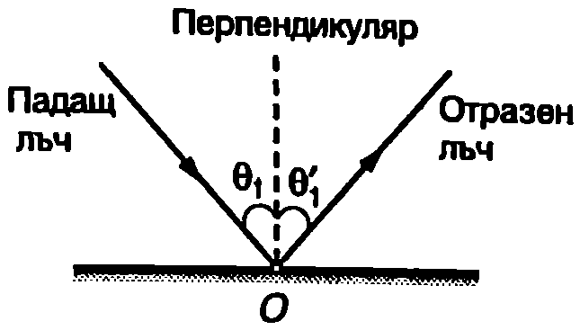
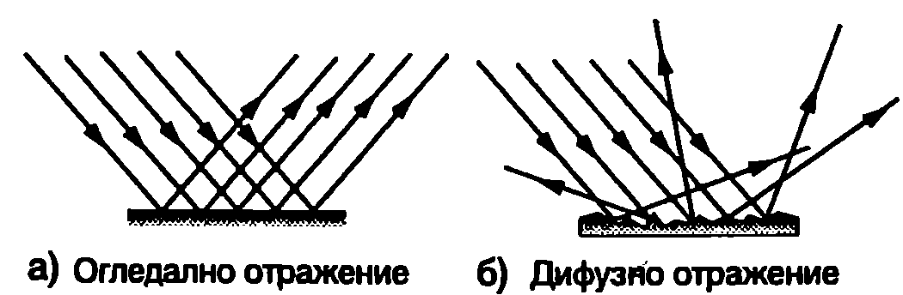
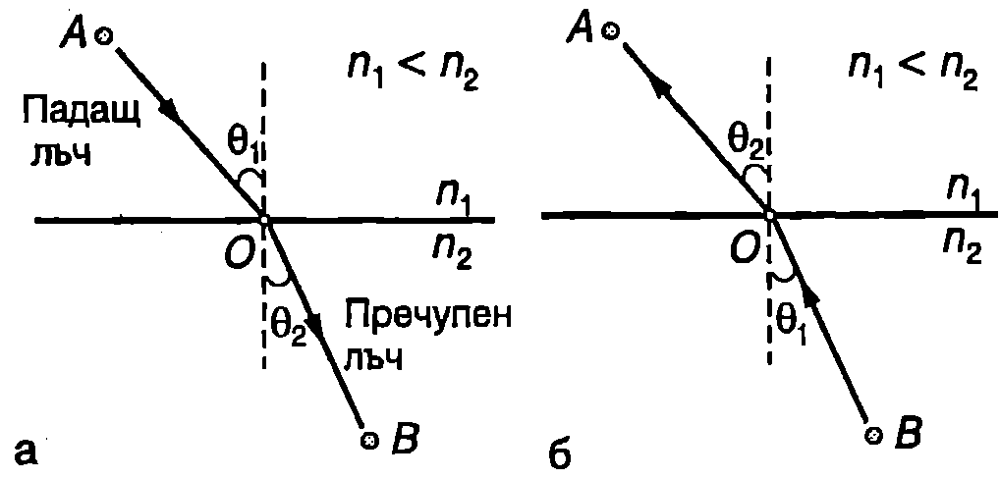
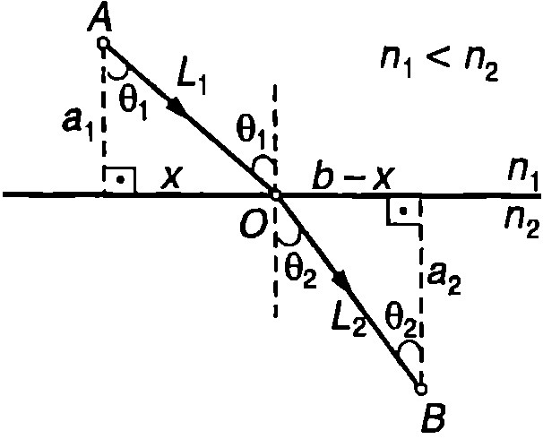
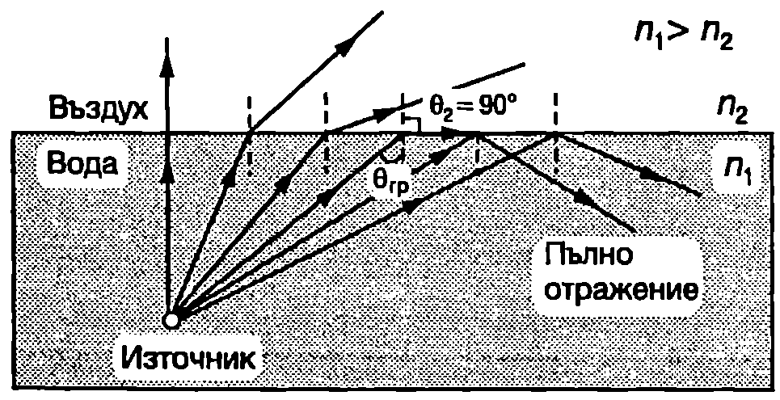
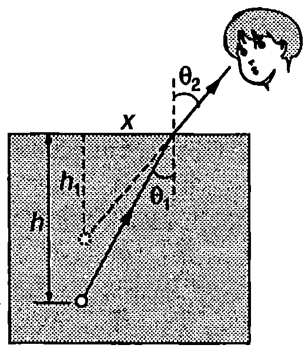
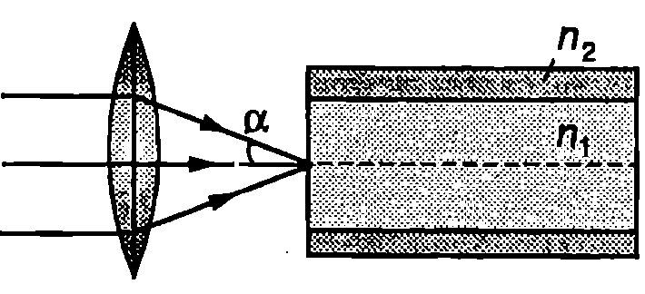

Разпространение на светлината в еднородна среда
Във вакуум всички електромагнитни вълни, независимо от честотата, се разпространяват с една и съща скорост m/s. В материална среда вълните от оптичния диапазон имат скорост , която зависи от физичните свойства на средата и от честотата и на вълната. Тя е по-малка от скоростта на вълните във вакуум. Величината
която показва колко пъти скоростта на светлината в материалната среда в по-малка от скоростта й във вакуум, се нарича показател на пречупване на средата. В оптичния диапазон показателят на пречупване на всички среди е по-голям от единица (). Среда с по-голям показател на пречупване се нарича оптически по-плътна от друга среда, която има по-малък показател на пречупване. За повечето материали, които са прозрачни във видима та област, показателят на пречупване има стойности между 1 и 2 (вж. табл.87.1).
\begin{table} \centering \begin{tabular}{cc} Материал& Показател на пречупване, п\ Въздух & 1,00029 \ Вода & 1,333 \ Етилов алкохол & 1,362 \ Бензол & 1,501 \ Стъкло (кроун) & 1,517 \ Стъкло (лек флинт) & 1,58 \ Серовъглерод & 1,629 \ Стъкло (тежък флинт) & 1,89 \ Диамант & 2,417 \ \end{tabular} \caption{Показател на пречупване на някои прозрачни материали за жълтата линия на натриева лампа ( = 589 nm)} \label{table:87.1} \end{table} Честотата на светлинните вълни се определя от техния източник — тя е равна на честотата, с която трептят електричните диполи на източника, и не зависи от свойствата на средата, в която се разпространява вълната. От общата формула за хармоничните (монохроматични) вълни равенство \eqref{eq:87.1} за светлинна вълна, в материална среда се получава
Следователно дължината на вълната на светлината зависи от показателя на пречупване на средата. Когато светлината навлиза в оптически по-плътна среда, дължината на вълната намалява, тъй като намалява скоростта на разпространение.
В прозрачна еднородна среда е в сила законът за праволинейното разпространение на светлината. Вълновите фронтове не променят формата си: плоската вълна остава плоска, сферичната сферична и т.н. Лъчите, които по определение са перпендикулярни на вълновите фронтове и показват посоката на разпространение на вълната, в еднородна среда са прави линии, т.е. те не се пречупват или огъват. В оптиката вместо математическите линии лъчи, често под лъч се разбира реален тънък успореден сноп от светлина, какъвто би могъл например да се получи при преминаване на светлинен сноп през малък кръгъл отвор. Ще отбележим, че получаването на безкрайно тънки успоредни снопове светлина, които точно да съответстват на математическия модел лъч”, е невъзможно поради явлението дифракция на светлината, на което ще се спрем в \ref{sec:92}.
Пример 87.1
Монохроматична светлина с дължина на вълната във въздуха nm попада в стъкло с показател на пречупване 1,5. Определете скоростта , честотата и дължината на вълната на светлината в стъклото. \end{psexample}
Решение
Тъй като показателят на пречупване на въздуха е много близък до единица (вж. табл.87.1), в повечето случаи можем да приемем, че той е равен на единица, т.е. да смятаме, че във въздуха светлината има същата скорост, както във вакуум. Скоростта на светлината в стъклото е
Честотата не се изменя, когато светлината преминава от една среда в друга среда. Записваме уравнение \eqref{eq:87.2} за въздуха (вакуум) и за стъклото , откъдето определяме :
При навлизане в оптически по-плътната среда (в стъклото) дължината на вълната намалява.
Явления на границата на две среди
Когато една вълна (електромагнитна или механична) достигне границата на две среди, в които скоростите на разпространението й се различават, наблюдават се явленията отражение и пречупване. При това възникват две нови вълни. Едната се връща в първата среда и се нарича отразена вълна, а другата преминава във втората среда и се нарича пречупена вълна. За светлинните вълни връзката между посоките на разпространение, състоянието на поляризация и интензитетите на падащата, отразената и пречупената вълна се получават с помощта на уравненията на Максуел, като се отчетат физичните свойства на средите и граничните условия. Тези задачи се решават от макроскопичната електродинамика. Тук ще се ограничим с представянето само на някои от основните резултати, част от които са били експериментално установени много преди разработването на електродинамиката като физична теория.
Отражение на светлината
Законите за отражение на светлината са били известни още на древните гърци:
-
Падащият лъч, отразеният лъч и перпендикулярът към граничната повърхност, издигнат в точката на падане (Фиг. \ref{fig:87.1}), лежат в една равнина, наречена равнина на падане.
-
Ъгълът на отражение в е равен на ъгъла на падане : .
Ъглите се измерват от перпендикуляра към лъча и стойностите им са в интервала от 0 до 90°.
\begin{figure}[h!] \centering  \caption{} \label{fig:87.1} \end{figure} Доказва се, че когато монохроматична светлина се отразява от оптически по-плътна среда, фазата на вълната търпи скок, при който се променя с . Изменение на фазата се наблюдава например за светлина, разпространяваща се във въздуха, при отражение от стъкло, метал или от водна повърхност. Казва се, че при такова отражение се “губи” половин дължи на на вълната (2/2), защото същото изменение на фазата се получава, ако вълната измине допълнително разстояние . Когато отражението се извършва от среда с по-малка оптична плътност, фазата на вълната не се изменя. Например светлина, която се разпространява във вода, не променя фазата си при отражение от границата вода-въздух.
Успоредни лъчи, които попадат върху гладка повърхност, след отражението от повърхността остават успоредни, като само променят посоката си в съответствие със законите за отражение. Такова отражение се нарича огледално (Фиг. \ref{fig:87.2}а). Ако отразяващата повърхност е грапава и съдържа неравности, чиито размери са много по-големи от дължината на вълната, отражението е дифузно. Неравната повърхност, например лист хартия или парче дърво, може да се разглежда като съставена от голям брой гладки участъци. Всеки участък отразява огледално попадналата върху него светлина (Фиг. \ref{fig:87.2}б), но поради различната (хаотична) ориентация на отделните участъци, отразената от цяла та повърхност светлина не се разпространява насочено, а се разпръсква дифузно във всички посоки.
\begin{figure}[h!] \centering  \caption{} \label{fig:87.2} \end{figure}
Да означим с интензитета на падащата светлина, а с интензитета на отразената светлина. Величината
се нарича коефициент на отражение. Коефициентът на отражение е безразмерна величина, която показва каква част от интензитета (енергията) на падащата вълна се отразява от граничната повърхност. В случай на наклонено падане () зависи както от ъгъла на падане , така и от състоянието на поляризация на падащата вълна. Доказва се, че в най-простия за анализ случай на нормално падане () коефициентът на отражение не зависи от състоянието на поляризация на светлината и се изразява с формулата
От нея следва, че не се променя, ако и разменят местата си, т.е. независимо от това, как се разпространява вълната от средата с показател на пречупване към средата с показател на пречупване или обратно, коефициентът на отражение от границата на двете среди е един и същ. Формула \eqref{eq:87.4} може с приближение да се прилага и за малки ъгли на падане .
Коефициентът на отражение зависи от разликата в показателите на пречупване на двете среди. При отражение не се извършва. Това се използва, например “в минералогията, за определяне на показателя на пречупване на образци от прозрачни минерали с неправилна форма. Образецът се потапя в смес от бензол и серовъглерод (вж. табл.87.1), чийто състав се подбира така, че да изчезне видимата граница между течността и кристала. Средата става оптически еднородна, когато се изравнят показателите на пречупване на сместта и на минерала.
Пример 87.2
Коефициентът на пречупване на стъклото е .
а) Определете каква част от светлината се отразява на границата стъкло въздух при нормално падане.
б) Оценете каква част от светлината попада в стаята през стъклата на прозорците в слънчев летен ден. \end{psexample}
Решение
а) В уравнение \eqref{eq:87.4} заместваме (въздух) и стъкло) и определяме коефициента на отражение на границата стъкло въздух: . Интензитетът на отразената светлина е , т.е. при нормално падане се отразява 4% от интензитета на падащата светлина.
- Ще смятаме, че светлината пада нормално върху стъклата на прозорците. Отражение се извършва както от предната, така и от задната повърхност на всяко стъкло. Да означим с броя на отразяващите повърхности. Интензитетът на преминалата през първата отразяваща повърхност светлина в , където е коефициентът на отражение, а е интензитетът на падащата светлина. Тъй като поглъщането е пренебрежимо малко, цялата преминала през първата отразяваща повърхност светлина достига втората отразяваща повърхност и през нея преминава светлина с интензитет . По аналогичен начин преминалата през -тата отразяваща повърхност светлина получаваме Обикновено прозорците са с две стъкла, т.е. имат четири отразяващи повърхности. За и се получава т.е само от светлината, която би влязла в стаята при отворен прозорец, преминава през стъклата на затворения прозорец.
Закон на Снелиус
Законът за пречупване на светлината е бил експериментално открит от холандския учен Уилброрд Снелиус (1591-1626):
Пречупеният лъч лежи в равнината на падане, а отношението на синуса на ъгъла на падане и синуса на ъгъла на пречупване не зависи от ъгъла на падане и е равно на
\begin{figure}[h!] \centering  \caption{} \label{fig:87.3} \end{figure}
където и са показателите на пречупване на двете среди (Фиг. \ref{fig:87.3}a).
От закона на Снелиус \eqref{eq:87.5} следва, че когато светлината навлиза в оптично по-плътна среда () , ъгълът на пречупване е по-малък от ъгъла на падане () и пречупеният лъч се приближава нормалата (Фиг. \ref{fig:87.3}а). Обратно, ако при пречупването лъчът навлиза в среда с по-малка оптична плътност, пречупеният лъч се отдалечава от нормалата (Фиг. \ref{fig:87.3}б).
Важно следствие от вълновата теория на светлината е принципът за обратимост на светлинните лъчи. Той се илюстрира от Фиг. \ref{fig:87.3}. На Фиг. \ref{fig:87.3}а в точка е разположен източник, а в точка — приемник на светлина. Ако приемникът стане източник, пътят на лъча остава същия, само се променя посоката на разпространение (Фиг. \ref{fig:87.3}б).
Принцип на Ферма
Френският математик и физик Пиер Ферма (1601-1665), изхождайки от общи съображения за целесъобразност в природата (природата достига своите цели с минимален разход на средства), формулира следния принцип:
При разпространение от една точка към друга точка светлината изминава път, който съответства на най-малкото време на разпространение.
Принципът на Ферма обяснява праволинейното разпространение на светлината в еднородна среда, където скоростта на светлината в постоянна, и светлината изминава разстоянието между две точки за най-малко време, ако се движи по правата линия, която ги свързва.
С помощта на принципа на Ферма може да се изведе законът на Снелиус (вж. пример 87.3) и да се получат редица други полезни резултати. Ще отбележим, че праволинейното разпространение на светлината и законите за пречупване и отражение се получават като следствия от вълновата теория на светлината, на което обаче тук няма да се спираме.
Пример 87.3
С помощта на принципа на Ферма получете закона на Снелиус за пречупването на светлината. \end{psexample}
Решение
Разглеждаме две точки и , разположени в оптически еднородни среди с показатели на пречупване и (Фиг. \ref{fig:87.4}). Да предположим, че светлинен лъч, който излиза от точка , след пречупване в точка от разделителната плоска повърхност на двете среди, преминава през точка . Всички разстояния, които ще използваме при решаване на задачата, са означени на Фиг. \ref{fig:87.4}.
\begin{figure}[h!] \centering  \caption{} \label{fig:87.4} \end{figure}
Светлината изминава разстоянието между точките А и В за време където и са скоростите на светлината среди. След заместване на скоростите и и разстоянията и (използваме питагоровата теорема вж. Фиг. \ref{fig:87.4}), за времето се получава където променливата задава положението на точка , т.е времето е функция на .
Съгласно с принципа на Ферма положението на точка трябва да е такова, че функцията да има минимум. Търсим екстремум на функцията като намираме първата й производна и я приравняваме на нула:
Използваме метричните зависимости в правоъгълните триъгълници от Фиг. \ref{fig:87.4} и записваме горното равенство във вида което съответства на закона на Снелиус за пречупването на светлината.
Пълно отражение
На Фиг. \ref{fig:87.5} е показан точков източник на светлина, поставен във вода. На границата вода въздух се наблюдават явленията пречупване и отражение: част от светлината преминава във въздуха, а останалата част се отразява от границата. Пречупените лъчи се отдалечават от нормалата към разделителната повърхност на двете среди, тъй като въздухът е с по-малка оптична плътност от водата. При определен ъгъл на падане , наречен граничен ъгъл, ъгълът на пречупване става — пречупеният лъч се плъзга по разделителната повърхност. Когато ъгълът на падане е по-голям от граничния ъгъл, светлината изцяло се отразява от границата и не прониква във въздуха.
Явлението, при което светлина, разпространяваща се в дадена среда, изцяло се отразява от границата с друга среда с по-малка оптична плътност, се нарича пълно отражение (или пълно вътрешно отражение).
Граничният ъгъл , след който настъпва пълното отражение се определя от закона на Снелиус \eqref{eq:87.5}, където се полага и . Получава се
\begin{figure}[h!] \centering  \caption{Пълно вътрешно отражение на границата вода-въздух.} \label{fig:87.5} \end{figure}
Приложения на пълното отражение
Пълното отражение от призми се използва в биноклите, перископите и др. оптични прибори за промяна на посоката на разпространение на светлината (Фиг. \ref{fig:87.6}).
Пълното отражение е основа на една от бързо развиващите се области на съвременната приложна физика влакнестата оптика. Оптичните влакна са много тънки (до няколко микрона) стъклени или кварцови нишки, по чиято дължина се разпространява светлина. Лъчите претърпяват пълно отражение от стените на влакното (Фиг. \ref{fig:87.7}) и не го напускат светлината преминава през влакното практически без загуби. Кабели, изготвени от голям брой оптични влакна, се използват във влакнестооптичните линии за връзка. Една такава линия позволява например едновременно да се предават 24 000 телефонни разговора или 48 телевизионни програми.
\begin{figure}[h!]
\centering
 \caption{Пълно отражение от призма.}
\label{fig:87.6}
\end{figure}
\caption{Пълно отражение от призма.}
\label{fig:87.6}
\end{figure}
Влакнестата оптика намира приложение в медицината за пряко наблюдение на редица вътрешни органи: гласни струни, бронхи, стомах, черва и др. Специален оптичен кабел се вкарва например през хранопровода в стомаха. Източник на светлина осветява вътрешния орган. На входа на оптичния кабел, наречен световод, се поставя събирателна леща, която превръща отразените от обекта лъчи в успореден сноп. Световодът съдържа много голям брой оптични влакна. Върху всяко от тях попада светлина от точно определена много малка област от обекта и влакното пренася информацията за тази област до изхода, където се получава контрастен образ на обекта.
\begin{figure}[h!]
\centering
 \caption{Разпространение на светлина по оптично влакно.}
\label{fig:87.7}
\end{figure}
\caption{Разпространение на светлина по оптично влакно.}
\label{fig:87.7}
\end{figure}
Пример 87.4
Върху равнобедрена правоъгълна призма попада успореден сноп светли на, както е показано на Фиг. \ref{fig:87.6}а. При какъв показател на пречупване на призмата светлината ще претърпи пълно отражение от задната и стена? Разгледайте два случая:
а) призмата е във въздух () ;
б) призмата е потопена във вода (). \end{psexample}
Решение
Светлината пада върху задната стена на призмата под ъгъл спрямо нормалата. Отражението е пълно, ако , където е граничният ъгъл. Тъй като голям ъгъл в интервала от до съответства по-голям синус, от формула \eqref{eq:87.6} получаваме неравенството . Следователно условието за пълно отражение от призмата е
а) Във въздуха: .
- Във водата: .
От получените числени стойности може да се направи изводът, че за отражателни призми във въздуха могат да се използват практически всички стъкла, докато при потапяне на призмата във вода пълно отражение ще се наблюдава само ако тя е направена от специално стъкло с голям показател на пречупване (вж. табл.87.1).
Задачи
-
Показателят на пречупване на магнезиевия оксид е . Колко е скоростта на светлината в този материал?
-
Светлинен лъч се отразява и пречупва от плоската граница на две среди. При какъв ъгъл на падане отразеният и пречупеният лъч са взаимно перпендикулярни?
-
Светлинен лъч преминава през плоскопаралелна стъклена пластинка.
а) Докажете, че пластинката не променя посоката на разпространение, а само успоредно премества лъча на разстояние
б) Определете . Известни са ъгълът на падане показателят на пречупване на стъклото и дебелината на пластинката,
- Когато се гледат отвън, предмети, намиращи се под вода, изглеждат на по-малка дълбочина от действителната дълбочина . Докажете, че при наблюдаване под малки ъгли (Фиг. \ref{fig:87.8}), е в сила съотношението , където е показателят на пречупване на водата.
Указание: За малки ъгли (в радиани) са в сила приближенията . \begin{figure}[h!] \centering  \caption{} \label{fig:87.8} \end{figure}
- В телекомуникационните системи се използват оптични влакна с тънка цилиндрична сърцевина, направена от стъкло с показател на пречупване която е покрита с еднороден слой от друго стъкло с показател на пречупване () Лазерен сноп светлина се фокусира събирателна леща върху предната основа на такова влакно, която е плоска и е перпендикулярна на оста (Фиг. \ref{fig:87.9}). При какъв максимален ъгъл на падане светлината ще се разпространява само в сърцевината на влакното? Изразете чрез и като отчетете, че стойността на параметъра е много по-малка от единица. Направете числени пресмятания за и .
\begin{figure}[h!] \centering  \caption{} \label{fig:87.9} \end{figure}